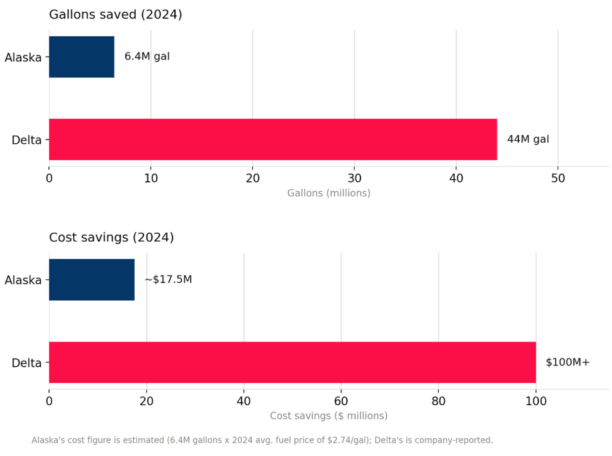

Sustainable Supply Chain Benchmarking: Alaska vs. Delta
Results at a glance
Savings figures are the airlines' own reported results, not savings I generated. Alaska's dollar figure is my estimate: 6.4M gallons multiplied by a 2024 average fuel price of $2.74 per gallon. Delta's is company-reported.
Problem
Two airlines in the same industry face the same pressure: fuel costs and emissions targets. How do their sustainability strategies differ, and what does each approach return?
Approach
- Benchmarked both airlines using their 10-K filings and ESG and sustainability reports.
- Compared net-zero targets and growth models. Alaska: internal and efficiency first. Delta: infrastructure heavy, partnership driven, and system-wide.
- Evaluated sustainable aviation fuel (SAF) procurement and fleet modernization.
- Looked at Alaska's operational levers, including AI-optimized routing and single-engine taxiing.
- Converted Alaska's gallons saved into dollars with a stated fuel price so the two could be compared, and labeled it as an estimate.
Tools
- 10-K filings and ESG reports
- ADD: Excel, charting tool, or anything else you used
Result

Delta's scale and capital produce far larger absolute savings. Alaska gets its results from focused operational changes. Both paths work, and sustainability integration emerged as a primary driver of operational efficiency and competitive advantage for each.
Takeaway: a solution that fits one company in an industry may not fit another with the same pain points and the same niche. Each will need a different path forward.
What I learned
ADD: 2 to 3 sentences in your own voice.